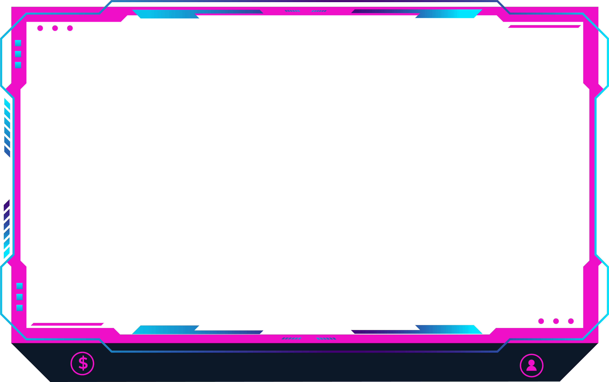
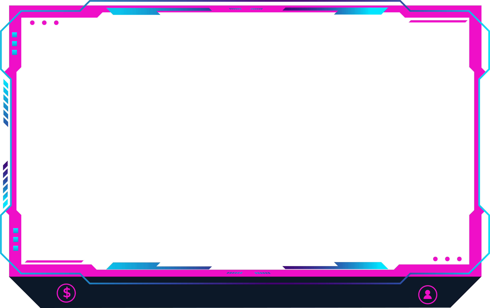
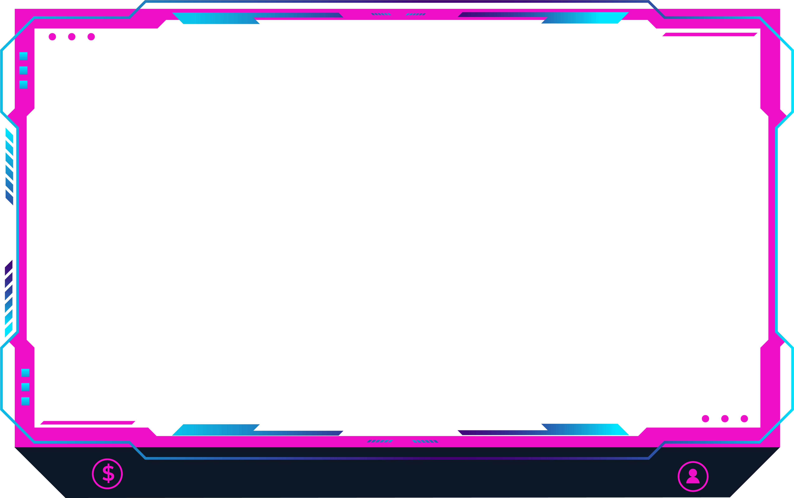
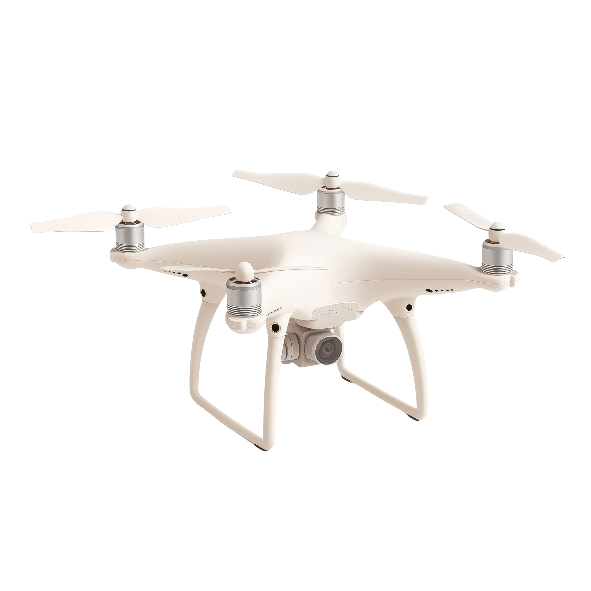
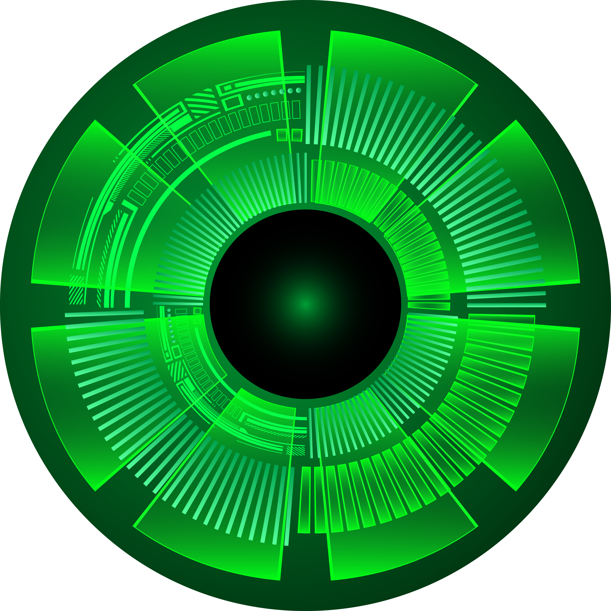
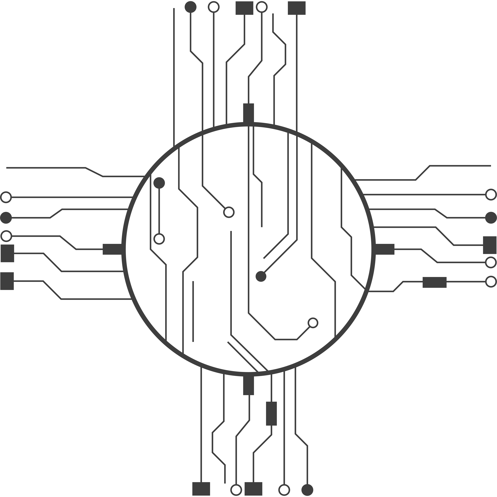
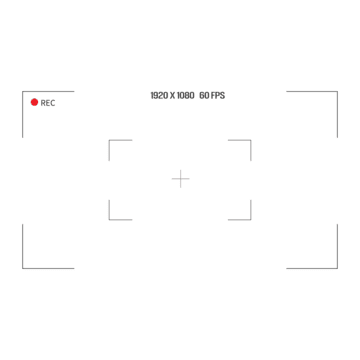

Neon Genesis
The city awakens. Holograms flicker to life, and the hum of plasma currents whispers your arrival.
 

The city awakens. Holograms flicker to life, and the hum of plasma currents whispers your arrival.

Above the megablocks, silent drones watch the flow of electric souls. Every light is a memory — every shadow, a secret.

Every neon beam is alive — sync your motion with the rhythm of the grid, and the city pulses with your heartbeat.

Hovercars slide through magnetic corridors. The roads are alive — streams of light whispering code beneath the rain.
Drones circle like mechanical deities, tracing invisible constellations through the artificial sky.
Ionized mist rolls through the alleys. Touch the haze — watch the light fracture into digital rain.
Reflections and motion intertwine — each frame a glitch, each moment a signature of electric beauty.

The architecture reads your motion — wave your hand, and geometry shifts in response to your signal.
Every creation breathes. Each reflection bends reality — a museum of photons sculpted by light.

The simulation hums, awaiting your final touch. Energy never sleeps — it only transforms.
